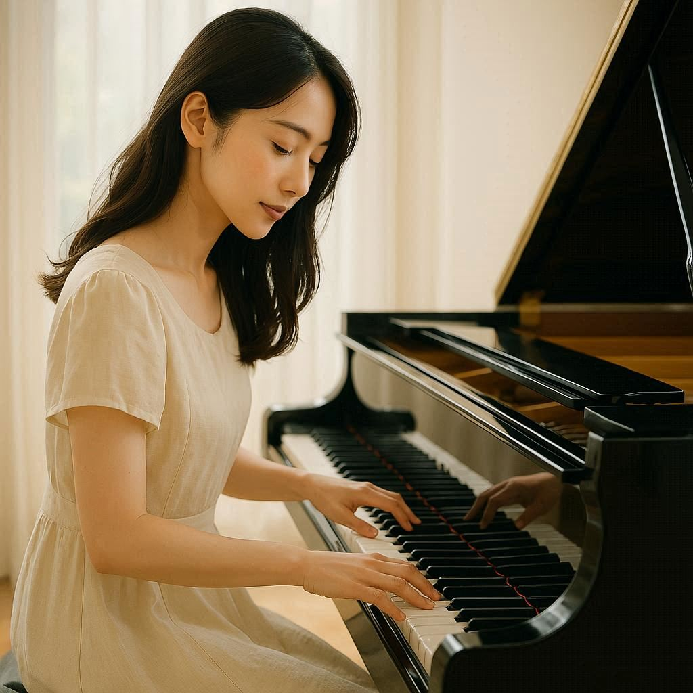

憧れのピアノを、もう一度
初心者から経験者まで、気軽に楽しめるレッスンを。
こんなお悩みありませんか？
子どもの頃に習っていたけど、大人になってからは遠ざかってしまった…
楽譜が読めないから不安
趣味として気軽に楽しみたい
教室の特徴
現役プロピアニストが直接指導
一人ひとりに合わせたオーダーメイドレッスン
発表会やコンサート出演のチャンスあり
レッスンを通して得られるもの
毎日の生活に音楽の楽しみが生まれる
自分のペースで上達できるからストレスフリー
仲間とつながり、演奏を分かち合う喜び
受講生の声
「ずっと憧れていた曲を弾けるようになり、自信がつきました！」（40代女性）
「先生が優しく、続けられるのが嬉しいです」（30代男性）
「発表会で演奏した時の達成感は忘れられません」（50代女性）
講師紹介
山田 華子
現役ピアニスト・講師
クラシックからポップスまで幅広く演奏経験を持ち、 初心者の方から経験者まで、一人ひとりに合わせた丁寧なレッスンを心がけています。●●音楽大学ピアノ科卒業。コンサート活動のほか、大人向けレッスンに定評があります。
レッスンについて
レッスン形態
個人レッスン（1回30分）
教室での対面またはオンライン対応
料金
月2回コース：8,000円（税込）
月4回コース：15,000円（税込）
体験レッスン（30分）：無料